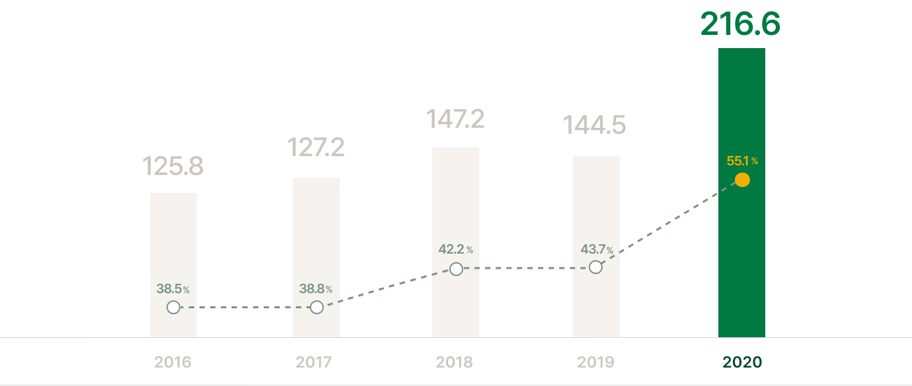
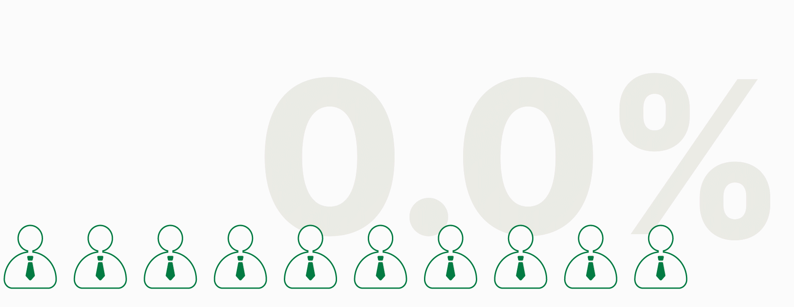

당신의
- 편안한
- 빛나는
- 새로운
갑자기
이런 일이 생긴다면?
근로 계약 해지 통보
귀하의 노고에 감사드립니다.
귀하와 근로 관계가 종료됨에 따라 근로 계약 해지 통보서를
보내드리오니 양지바랍니다.
근로 계약 해지 통보서
유효기간: ~2022.11.08
열기 ∙ 폴더 열기
내가 갑자기 퇴직자가 된다고?

2020년 전체 퇴직자 216만 명
그 중 절반 이상이 비자발적으로 퇴직
김상범·유희곤.”지난해 비자발적 퇴직자 158만명…전체 퇴직자의 절반 가까이 차지” 경향신문. 2022.04.11 08:03

퇴직자 10명 가운데 7명은 퇴직 후유증 경험
김혜령, 경은진, 김지현, 고은아, 생애금융보고서:대한민국 퇴직자들이 사는 법(생애금융보고서:하나금융경영연구소,2020),40p
그 중 42%는 1년 이상 장기적인 퇴직 후유증을 호소
김혜령, 경은진, 김지현, 고은아, 생애금융보고서:대한민국 퇴직자들이 사는 법(생애금융보고서:하나금융경영연구소,2020),40p
퇴직 후 막막한
당신을 위한 퇴직 후유증 케어 서비스
이담이 함께할게요
이담 로고
서비스 접근
퇴직 후유증 극복을 돕는 새로운 방법
Pain point 01
퇴직 후유증 관련 개인화 서비스 부족
Solution 01
사용자 맞춤형 기반
초개인화 서비스
사용자의 퇴직 후유증 단계에 따라 3단계로
세분화하여
초개인화된 맞춤형 서비스를 제공합니다.
Pain point 02
오랫동안 지속되는 우울과 불안 증세
Solution 02
지속적으로 셀프케어
할 수 있는 서비스
퇴직 후유증 단계별 맞춤형 챌린지를
제공하여
지속적으로 우울과 불안을 극복할 수 있도록 합니다.
Pain point 03
인적 관계로부터 느껴지는 단절감
Solution 03
가족, 인연들과의
연결 서비스
가족 및 새로운 인연들과 공감 및 소통할 수 있도록
연결해주는 서비스를 제공합니다.
당신의 빛나는 이다음을 찾을 수 있도록
퇴직 후유증 케어 서비스, 이담
이다음으로 향하는
퇴직자
이다음을 함께하는
가족
이담은 급증한 퇴직자 문제의 심각성을 인지하고, 퇴직 후유증 극복이 마주한 한계에서
벗어나기 위해 새로운 퇴직 후유증 케어 서비스를 제안합니다.
사용자에게 퇴직 후유증
극복을 위한 지속적인 서비스를 제공하고, 퇴직자와 가족을 연결해 사용자의 관계 회복을
유도합니다. 이러한 연결을 통해 퇴직자는 가족에게 자신의 상태를 알릴 수 있으며, 가족은
퇴직자를 이해하고 그들에게 응원의 메시지를 건넬 수 있도록 돕습니다.
페르소나
갑작스러운 퇴직, 이담 사용자들의 이야기
- 박강석
- 54세
- 심각
- 충격과 불안 관리가
필요한 퇴직자
- 최한구
- 57세
- 경미
- 여러 가능성을
체험해보고 싶은 퇴직자
- 김미령
- 50세
- 극복
- 적극적으로 제 2의 인생을
준비하고 싶은 퇴직자
- 신지우
- 27세
- 가족
- 아빠를 위로해주고 싶은
퇴직자의 가족
- NEED 01
- 퇴직 후 받은 충격과 불안을 관리해주는 서비스가 있었으면 좋겠어요.
- NEED 02
- 일상에서 벗어나 나의 새로운 가능성을 발견하고 싶어요.
- NEED 03
- 새로운 시작을 준비하기 위해 나의 상태를 파악하고, 목표를 설정하고 싶어요.
- NEED 04
- 퇴직한 아빠의 마음을 이해하고, 응원의 메시지를 전달하고 싶어요.
서비스 로드맵
퇴직 후유증의 상태별 초개인화 맞춤 이담 서비스
Target
비자발적 퇴직후유증
agree
- 심각
- 경미
- 극복
Needs
- 퇴직 후
충격과 불안 관리 - 퇴직 후
가능성 발견 - 퇴직 후
제 2의 삶 설계
Service
- 킬링 타임 및 공감을 돕는관찰형 콘텐츠
- 자신의 가능성을 발견할 수 있는 체험형 콘텐츠
- 새로운 도전을 위한 목표 설정을 돕는 실행형 콘텐츠
Effect
- 공감을 통한 위로를
건넬 수 있는
퇴직 후유증
극복 서비스 구축 - 퇴직자에게
이다음 삶을 제안하고 실행을 돕는 서비스 구축
정보구조도
퇴직 후유증 상태별 달라지는 개인 맞춤형 정보 설계
- 1단계 | 퇴직자 후유증 심각단계
- 2단계
- 3단계
- 가족이담
관찰형 킬링타임 콘텐츠
퇴직 후, 충격과 불안 관리를 도우며 공감과 위로를 주는 퇴직 후, 충격과 불안 관리를 도우며 공감과 위로를 주는 퇴직 후, 충격과 불안 관리를 도우며 공감과 위로를 주는
흥미로운 체험형 콘텐츠
제 2의 삶 설계를 도우며 가능성을 발견하고 이다음을 위한 준비를 제 2의 삶 설계를 도우며 가능성을 발견하고 이다음을 위한 준비를
목표 설정 및 도전 콘텐츠
테스트를 통해 상태를 파악하고 도약을 위한 체험과 목표 수립을 도우는 테스트를 통해 상태를 파악하고 도약을 위한 체험과 목표 수립을 도우는
당신의 빛나는 이다음, 이담이 함께 하겠습니다. 당신의 빛나는 이다음, 이담이 함께 하겠습니다. 당신의 빛나는 이다음, 이담이 함께 하겠습니다.
이담이
보여주고 싶은 이야기
로고
이다음으로 향하는 이담
이담은 퇴직자들의 빛나는 다음 세상을 응원합니다. 퇴직 후 이다음의 삶을 위해, 이다음의 단계를 넘어, 이다음의 사회를 꿈꿉니다.
여러 단계를 넘어 새로운 이다음을 꿈꿀 수 있는 이담만의 가치를
ㅇㄷ의 형태와 지속적인 방향성을 나타내는 화살표를 활용하여
나타내었습니다.
007A40F5F5F5
COLOR
디자인 키워드
따뜻하고 편안한
안정을 주는 색상인 초록색과 줄거움을 주는 노란색을 사용하여 사용자들에게 안락한 휴식을 제공하고, 빛나는 다음으로 나아갈 수 있는 원동력을 심어줍니다.
Cozy
아늑한
Happy
행복한
Comfy
안락한
Homely
검소한
디자인 타이포
반듯함이 주는 안정감
- 프리텐다드
- 당신의 빛나는
- 이다음, 이담
이담은 올곧은 산세리프체 프리텐다드를 사용하여 사용자들에게 안정감을 제공하며 편안한 공간으로 자리잡을 수 있도록 합니다.
- Regular
- Medium
- Semibold
- 당신의 이다음
- 퇴직 후유증 케어
- 서비스 이담
Service
빛나는 이다음을 위한 이담
온보딩
이담의 편안한 첫인상을 보여줄 수 있는
온보딩을 구상하였습니다.
사용자군을 분리하여 각각의 목적을 나타낼 수 있는 설명을 제공합니다.
사용자가 선택할 수 있는 맞춤 화면설정
사용자는 로그인 화면, 드로어 메뉴에서 자신의 필요에 따른 맞춤형 메인을 선택할 수 있습니다. 자신의 퇴직 후유증 상태에 따라 부담없이 언제든 선택 및 변경이 가능합니다.
- 심각STEP 1
- 경미STEP 2
- 극복STEP 3
- 퇴직자들의 이야기를 제공하여
공감으로부터의 위로를 유도합니다. - 사용자가 자신의 가능성을 발견할 수 있게 하며 이다음으로의 준비를 유도합니다.
- 테스트를 통해 사용자의 상태를 파악하고 목표를 수립할 수 있도록 돕습니다.
맞춤형 콘텐츠
-
충격과 불안 관리를 돕기 위한 관찰형 킬링타임 콘텐츠
-
도약을 위한 체험을 제공하는 흥미로운 체험형 콘텐츠
-
제 2의 삶 설계를 도울 수 있는 목표 설정 및 도전 콘텐츠
STEP 1
심각이담 스토리
부담 없이 시간을 보낼 수 있는 킬링타임 콘텐츠를 제공합니다.
많은 시간을 보내는 집, 다들 어떻게 시간을 보내시나요? 코로나 19 이후 홈라이프 트렌드가 급 부상하며 그와 같이 힐링 인테리어라는 신조어가 등장하게 되었습니다.
인테리어로 힐링이 된다고? 의문을 가지고 계실 이담들을 위해 제가 소개해드릴게요!
Editor. 민서담
STEP 2
경미이담 챌린지
단계별 사용자 맞춤 챌린지를 제공하여,
지속적으로 케어를 도울 수 있는 서비스를 제공합니다.
STEP 3
극복셀프 케어 테스트
나의 상태 테스트, 나의 이담 테스트, 나의 일기 예보
자신의 현재를 파악하고 나아갈 수 있는 콘텐츠를 제공합니다.
My 이담
퇴직자의 셀프 케어를 돕기 위해 테스트 기반의 개인 맞춤형 챌린지를 제공합니다.
나의 감정 일기 예보 등록 및 공유
상태 파악 및 목표 설정을 위한 테스트
단계별 응원 한마디 및 추천 챌린지
추천 챌린지 상세 설명
취미
사용자가 직접 설정한 정보를 기반으로 퇴직자에게 취미를 추천하고 직접 참여하도록 유도합니다.
담소
퇴직자들 간의 커뮤니티를 형성하여
직접 자신의 일상을 공유하고, 소통할 수 있게 합니다.
#일상 #데이트 #취미
#일상 #휴식
#일상 #혼카페 #휴식 #안정
가족, 새로운 인연들과의 연결
가족이담 서비스를 통해 소원해졌던 가족, 퇴직자의 관계 회복을 돕습니다.